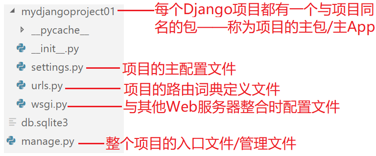
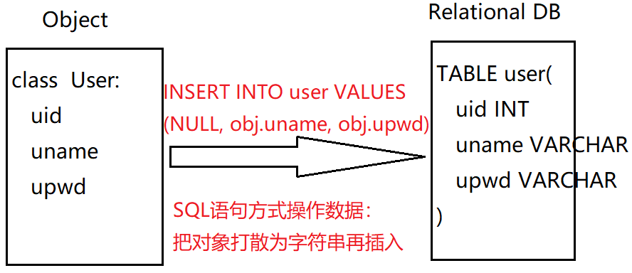
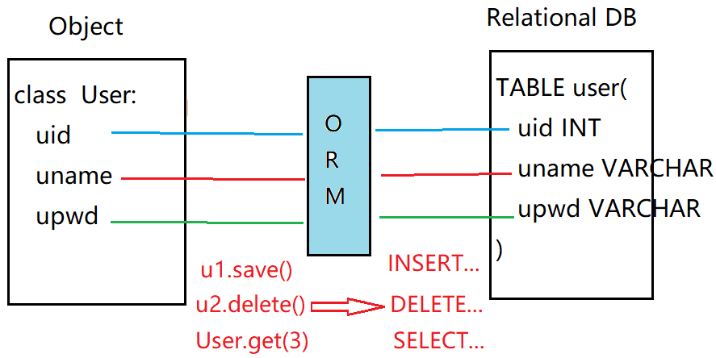

01.复习
Node.js原生可以实现Web服务器；第三方简化工具：Express
Python原生可以实现Web服务器；第三方简化工具：Django
1.Django框架
官网：https://www.djangoproject.com/
中文手册地址：https://docs.djangoproject.com/zh-hans/2.2/
Django是一个基于Python Web开发框架，集成度非常高，提供了非常强大的功能：①架构采用MVC的变种——MTV(Model，Template，View) ②采用ORM映射机制实现无SQL的数据库操作 ③自动生成后台管理系统
Django框架的使用步骤：
①下载并安装3.x+的Python解释器
②下载并安装最新版本的Django框架
pip uninstall Django #卸载已经安装的Django(如果的话)
pip install Django #全新安装，使用官方仓库
#如果官网仓库下载总失败，可使用豆瓣网提供的仓库进行安装
pip install -i https://pypi.douban.com/simple Django
③进入项目创建目录，运行Django提供的项目创建工具：
django-admin startproject 新项目名
④进入项目根目录(有manage.py的目录)，启动该项目：
python manage.py runserver
项目默认启用8000端口，如果已被占用，可以换其他端口
python manage.py runserver 8008
⑤可以使用客户端浏览器访问Django项目：
http://127.0.0.1:8000
2.Django项目路由配置

提示：Django中的路由地址不同于Vue、NG、React中的路由地址；更加类似于Express中路由器配置的路由地址：
路由 = URL + 处理方法
Django项目中的路由词典声明在主App中的urls.py中
最简单的路由声明方法：
#主App/urls.py
from django.http import HttpResponse
#路由方法——Views
def doLogin(req):
res = HttpResponse('res boy')
return res
#路由词典
urlpatterns = [
path( 'user/login', doLogin )
]
#路由URL不能以/开头，可以/结尾，但是浏览器会自动在请求URL拼接一个/
上述方法虽然简单，但是在一个文件中声明很多的路由处理方法不方便——推荐把同的路由处理方法(称为View）放到不同的App中！
一个Django项目称为一个“Project(工程/项目)”，一个项目中可以有多个功能模块/板块，在Django中称为“App(应用程序)”；例如：sohu.com是一个Project，其中有 Sports App、Car App....
创建一个新的项目： django-admin startproject 项目名
在项目中创建新的App： python manage.py startapp 应用名
记得在主App/settings.py中声明
总结：在Python中创建新路由的步骤
①创建Django项目
django-admin startproject xuezi
②创建子App
python manage.py startapp user
③在主App的配置列表中声明子App
#主App/settings/INSTALLED_APPS #33行
'user'
④在子App下创建路由处理方法
#/user/views.py:
def login(req):
return HttpResponse('body')
⑤为路由处理方法分配路由地址
#主App/urls.py
urlpatterns = [
path('user/login', user.views.login)
]
练习：创建一个子App：product，其中包含两个视图方法：productList和productDetail，分别为两个方法分配路由地址：product/list、product/detail
3.在服务器端路由处理方法中接收请求消息、返回响应消息
(1)服务器端路由如何接收请求消息中传递的数据
情形1：查询字符串中的请求数据(GET)
客户端请求消息：GET /product/list?kw=macbook&pno=2
服务器端读取请求数据： k = req.GET['kw'] p=req.GET['pno']
情形2：请求主体中的请求数据(POST)
客户端请求消息：BODY: kw=macbook&pno=2
服务器端读取请求数据： k = req.POST['kw'] p=req.POST['pno']
情形3：请求URL中的请求数据(*)——路由参数
客户端请求消息：GET /product/detail/dell/25
服务器端设置路由地址： path('product/detail//', xxx)
服务器端读取路由参数： def productDetail(req, pname, pid):
(2)服务器端路由如何设置不同类型的响应消息
主要对象：django.http.HttpResponse / JsonResponse
#设置响应消息主体数据
res = HttpResponse( json.dumps( bodyData) )
#设置响应消息头部
res['Content-Type'] = 'application/json'
res['Access-Control-Allow-Origin'] = '*'
return res
说明：JsonResponse会自动把Object序列化为字符串，同时会自动设置Content-Type为application/json
4.Django中如何实现数据库操作 —— 比较晦涩的理论知识！但重要
编写动态网站的传统方式——执行SQL语句式：

Django中最推荐的数据库操作方式不是直接向MySQL发送SQL语句，而是使用ORM框架技术： Object Relation Mapping, “对象-关系型数据库-映射”技术：

ORM框架的三种实现方式：
(1)手工编写映射文件：需要手工创建类(Object)，再手工创建所有的表(Relation)，最后手工指定哪个类的哪个属性 对应 哪个表的哪个列
(2)正向生成Relation方式：手工编写所有的类(Object)，然后使用ORM工具根据类自动生成所有的关系表(Relation)
(3)逆向生成Object方式：手工编写所有的表(Relation)，然后使用ORM工具逆向创建所有的类(Object)
提示：Django框架支持方式2和方式3，“净美仕重构”项目采用方式3
根据MySQL数据库中的表结构，使用ORM工具生成所有的类，步骤：
(0)在MySQL服务器中创建必需的表结构
(1)使用pip下载第三方MySQL ORM驱动模块：
pip install pymysql #从未安装过
pip install --upgrade pymysql #安装过，进行升级
(2)编辑项目主App的初始化文件__init__.py，声明使用pymysql作为ORM驱动
import pymysql
pymysql.install_as_MySQLdb( )
(3)编辑项目主App的配置文件settings.py，指定数据库连接必需的参数
DATABASES = {
'default': {
#'ENGINE': 'django.db.backends.sqlite3',
#'NAME': os.path.join(BASE_DIR, 'db.sqlite3'),
'ENGINE': 'django.db.backends.mysql',
'NAME': 'mfresh',
'HOST': '127.0.0.1',
'PORT': 3306,
'USER': 'root',
'PASSWORD': ''
}
}
(4)运行Django提供的ORM逆向生成工具，根据数据库表结构创建对应的class
python manage.py inspectdb #检查数据库，生成每个表对应的class
5.课后任务
(1)在本机上部署运行“净美仕官网”旧有项目，掌握其数据库表结构及项目功能点
(2)根据上述ORM逆向生成步骤提示，在当前Django项目中逆向生成每个对应的class——过程中会遇到Python3的兼容性Bug，尝试百度解决
6.毕业阶段项目——把公司旧有项目进行重构
项目一：净美仕官网
PC版本： http://www.codeboy.com/mfresh
PC版本源码： http://www.codeboy.com/mfresh/mfresh.zip
APP版本： http://www.codeboy.com/mfresh-m
APP版本源码： http://www.codeboy.com/mfresh-m/mfresh-m.zip
项目二：iWeb在线课堂
PC版本： http://www.codeboy.com/iweb
PC版本源码： http://www.codeboy.com/iweb/iweb.zip
APP版本： http://www.codeboy.com/iweb-m
APP版本源码： http://www.codeboy.com/iweb/iweb-m.zip
项目三：优生活租房网
PC版本： http://www.codeboy.com/ulift
PC版本源码： http://www.codeboy.com/ulift/ulift.zip
APP版本： http://www.codeboy.com/ulift-m
APP版本源码： http://www.codeboy.com/ulift/ulift-m.zip
任务：把净美仕旧项目(静态文件+PHP服务器)在自己电脑上运行起来：
①找到净美仕的mfresh.sql文件，在本地MySQL服务器上执行一遍
②把mfresh根目录拷贝到c:/xampp/htdocs目录下，启动XAMPP服务器
③使用客户端浏览器访问本地的净美仕项目